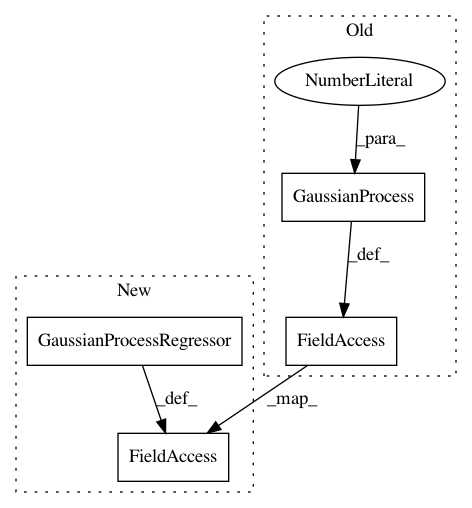

0bd5632e6a841ec2414d4364bf5665740a107234,trunk/SUAVE/Components/Energy/Networks/Propulsor_Surrogate.py,Propulsor_Surrogate,build_surrogate,#Propulsor_Surrogate#,122
Before Change
// Pick the type of process
if self.surrogate_type == "gaussian":
regr_sfc = gaussian_process.GaussianProcess(theta0=50.,thetaL=8.,thetaU=100.)
regr_thr = gaussian_process.GaussianProcess(theta0=15.,thetaL=8.,thetaU=100.)
thr_surrogate = regr_thr.fit(xy, thr)
sfc_surrogate = regr_sfc.fit(xy, sfc)
elif self.surrogate_type == "knn":
regr_sfc = neighbors.KNeighborsRegressor(n_neighbors=1,weights="distance")
regr_thr = neighbors.KNeighborsRegressor(n_neighbors=1,weights="distance")
sfc_surrogate = regr_sfc.fit(xy, sfc)
thr_surrogate = regr_thr.fit(xy, thr)
elif self.surrogate_type == "svr":
regr_thr = svm.SVR(C=500.)
regr_sfc = svm.SVR(C=500.)
sfc_surrogate = regr_sfc.fit(xy, sfc)
thr_surrogate = regr_thr.fit(xy, thr)
// Save the output
self.sfc_surrogate = sfc_surrogate
self.thrust_surrogate = thr_surrogate
After Change
// Pick the type of process
if self.surrogate_type == "gaussian":
gp_kernel_RQ = RationalQuadratic(length_scale=1.0, alpha=1.0)
regr_sfc = gaussian_process.GaussianProcessRegressor(kernel=gp_kernel_RQ,normalize_y=True)
regr_thr = gaussian_process.GaussianProcessRegressor(kernel=gp_kernel_RQ)
thr_surrogate = regr_thr.fit(xy, thr)
sfc_surrogate = regr_sfc.fit(xy, sfc)
elif self.surrogate_type == "knn":
regr_sfc = neighbors.KNeighborsRegressor(n_neighbors=1,weights="distance")
regr_thr = neighbors.KNeighborsRegressor(n_neighbors=1,weights="distance")
sfc_surrogate = regr_sfc.fit(xy, sfc)
thr_surrogate = regr_thr.fit(xy, thr)
elif self.surrogate_type == "svr":
regr_thr = svm.SVR(C=500.)
regr_sfc = svm.SVR(C=500.)
sfc_surrogate = regr_sfc.fit(xy, sfc)
thr_surrogate = regr_thr.fit(xy, thr)
// Save the output
self.sfc_surrogate = sfc_surrogate
self.thrust_surrogate = thr_surrogate
In pattern: SUPERPATTERN
Frequency: 3
Non-data size: 4
Instances
Project Name: suavecode/SUAVE
Commit Name: 0bd5632e6a841ec2414d4364bf5665740a107234
Time: 2018-09-26
Author: mclake2@stanford.edu
File Name: trunk/SUAVE/Components/Energy/Networks/Propulsor_Surrogate.py
Class Name: Propulsor_Surrogate
Method Name: build_surrogate
Project Name: fmfn/BayesianOptimization
Commit Name: bd6efbca8357c97231e7ae5a18bea309df0aef90
Time: 2016-09-28
Author: fnogueira@Fernandos-MacBook-Pro.local
File Name: bayes_opt/bayesian_optimization.py
Class Name: BayesianOptimization
Method Name: __init__
Project Name: suavecode/SUAVE
Commit Name: 640d91404771e314b7c85fcf1b733182567902df
Time: 2018-09-26
Author: ebotero@stanford.edu
File Name: trunk/SUAVE/Components/Energy/Networks/Propulsor_Surrogate.py
Class Name: Propulsor_Surrogate
Method Name: build_surrogate